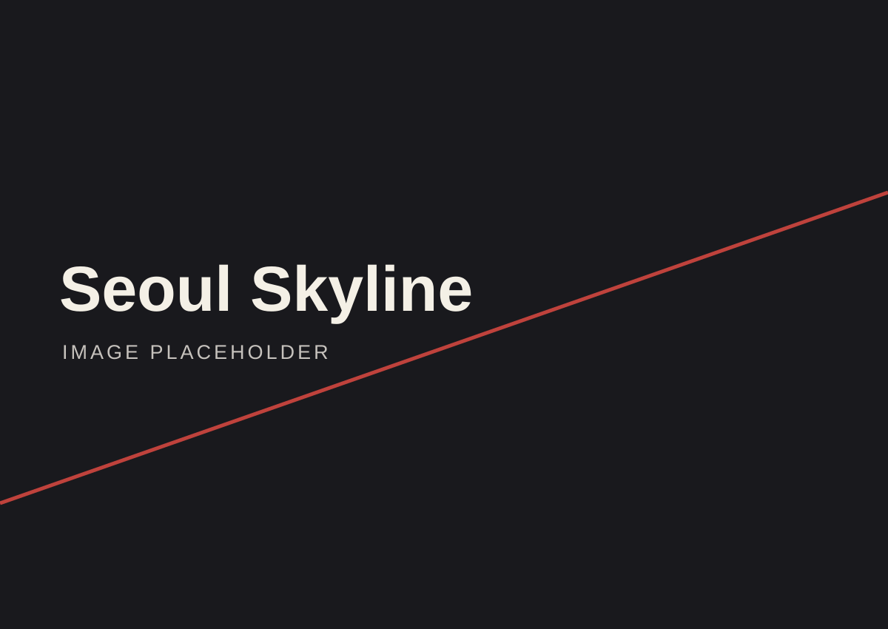
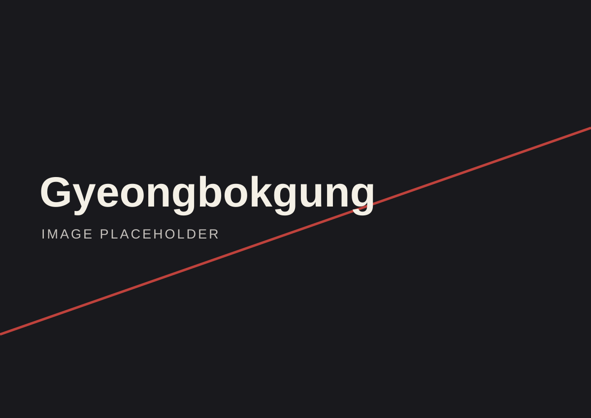
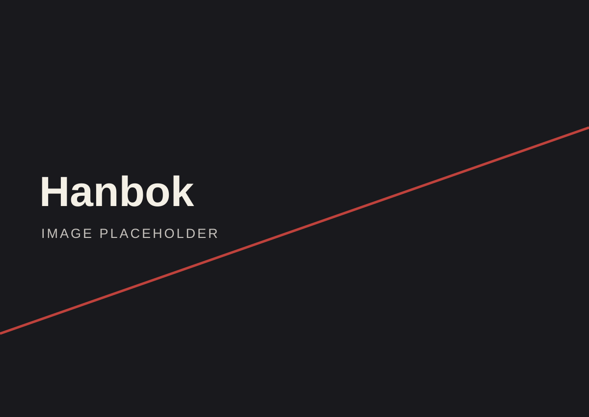
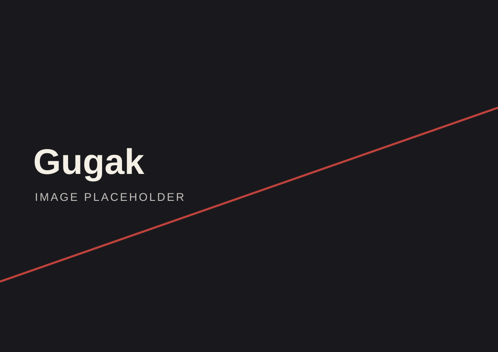
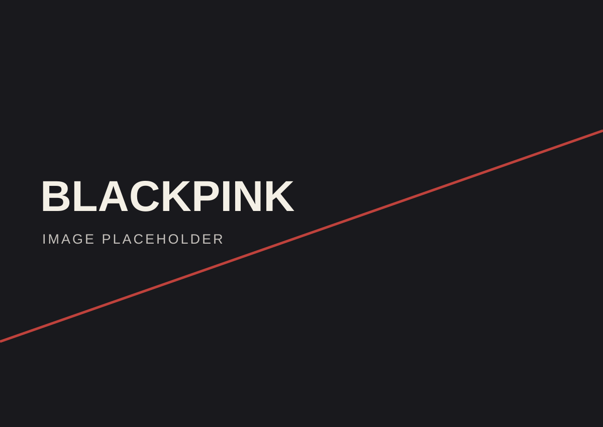
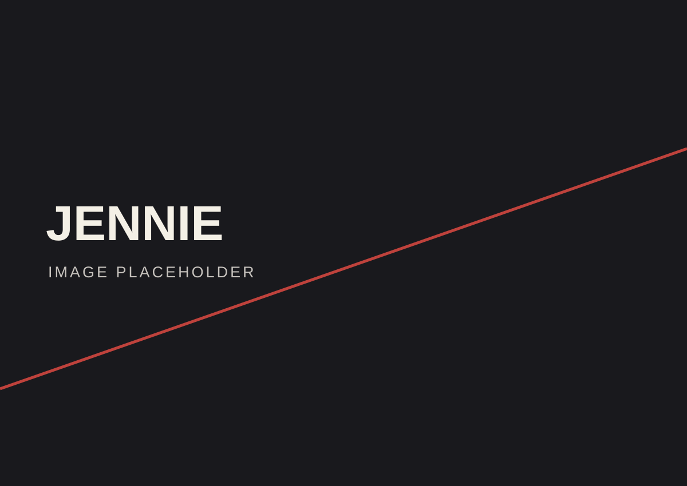
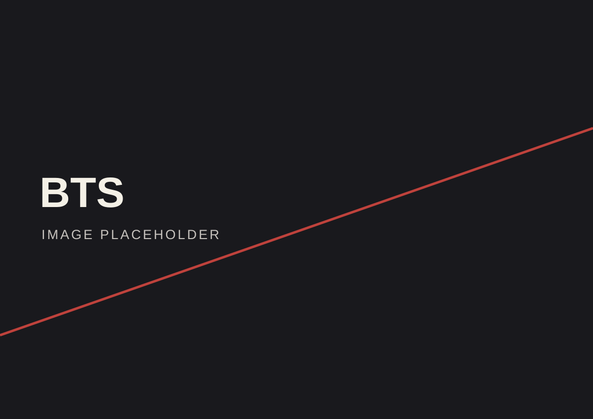
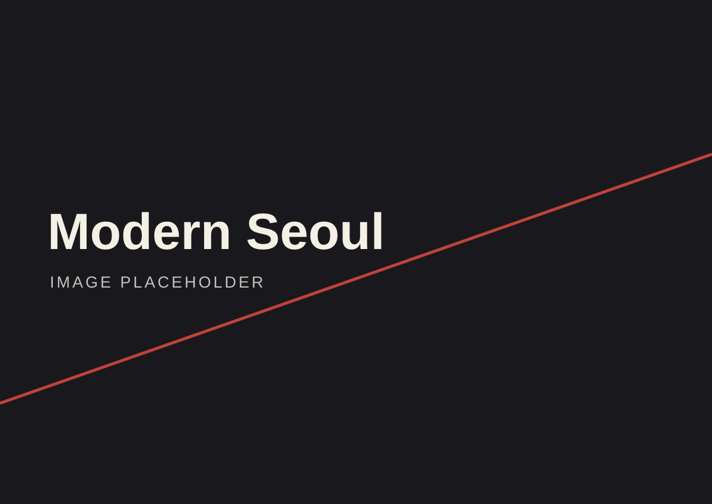

NOT THE POSTCARD. THE WHOLE STORY.
KOREA:UNFILTERED.
From centuries-old traditions to the streets shaping what comes next. Look closer.
37° 33′ N / 126° 58′ E
THE EDITORIAL / 00
NOT JUST A PLACE.
A WHOLE WORLD.
South Korea moves between old and new at extraordinary speed. This is a visual introduction to its layered history, everyday rituals, creative scenes and the food that brings people together.
SCROLL TO EXPLORE ↓BEFORE
THE NEON.
Centuries of ideas, upheaval and reinvention shaped the Korea we see today. Follow the turning points.

Founded in 1392, Joseon shaped Korean government, scholarship and everyday customs for more than five centuries. Its palaces remain part of Seoul today.
FIVE MOMENTS. NOT THE WHOLE STORY. ↗
WORN.
SPOKEN.
SHARED.
Not frozen in time. Korea’s traditions live in the things people wear, the words they write, and the stories they pass on.

MORE THAN
A COSTUME.
Hanbok is defined by its lines, proportions and movement. From the flowing chima skirt to the structured jeogori jacket, its silhouettes continue to inspire Korean fashion today.
One syllable, built from individual letters.
King Sejong created Hangul in 1443, and its principles were published in 1446. Designed to represent Korean sounds, the alphabet opened new possibilities for reading and writing.
03 / AT THE TABLE
EAT THE
STORY.
From fermentation to street food, each dish tells a different story. Explore the flavors — and the shared side dishes, called banchan, that make a Korean table feel complete.
Photography credits and licensing information appear at the end of the page.
THE CITY
HAS A SOUND.
From centuries-old traditions to new global voices. Four scenes. One evolving soundtrack.

FOUR GENRES / FOUR DIFFERENT STORIESROOTS & RHYTHM.
Gugak is an umbrella term for Korean traditional music, including court music, folk traditions and pansori — dramatic storytelling through song. These sounds remain part of Korea’s living culture.
BEYOND
THE STAGE.
Not just a genre. A visual culture that moves across borders.

01 / THE GROUPOFFICIAL CHANNEL ↗BLACKPINKFour performers. An unmistakable visual language.
02 / THE SOLOISTOFFICIAL CHANNEL ↗JENNIEA singular presence across music, performance and fashion.
03 / THE GLOBAL STAGEOFFICIAL CHANNEL ↗BTSSeven voices. Stadium-scale stories heard around the world.INDEPENDENT EDITORIAL CONCEPT · NOT AFFILIATED WITH THE ARTISTS · PHOTOGRAPHS SUPPLIED FOR THIS PROJECT
06 / KOREA TODAY
ALWAYS
IN MOTION.
In Seoul, centuries-old streets meet contemporary architecture, late-night cafés and fast-moving creative scenes. Modern Korea is built from contrasts, not a single image.

A CITY OF CONTRASTS
NEVER
ONE
STORY.
Look beyond the skyline: neighborhood markets, riverside paths, independent cafés and studios shape everyday Seoul. The city keeps changing, but its story is told by the people who live and work there.
KEEP LOOKING CLOSER ↗
.jpg){kind=link}